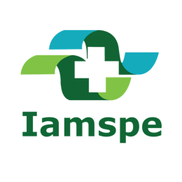
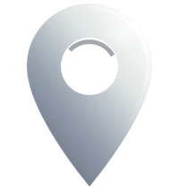

Curitiba · Ponta Grossa
Clareza nos diagnósticos.
Precisão nos tratamentos
Otorrinolaringologista e Cirurgião de Cabeça e Pescoço: diagnóstico e tratamento das condições do ouvido, nariz, garganta, tireoide e pescoço.
CRM-PR 44.604 · RQE ORL 38.131 · RQE CCP 38.979
Formação
Onde a prática
foi construída
Residência, hospital-escola e centro cirúrgico. Essa formação é a base de cada conduta indicada em consulta, desde o primeiro exame até o acompanhamento pós-operatório.
- Medicina Pontifícia Universidade Católica do Paraná (PUCPR)
-

Otorrinolaringologia Instituto de Assistência Médica ao Servidor Público Estadual de São Paulo (IAMSPE) - Cirurgia de Cabeça e Pescoço Hospital das Clínicas da Faculdade de Medicina da Universidade de São Paulo (HCFMUSP)
- Doutorando Faculdade de Medicina da Universidade de São Paulo (FMUSP)
- Médico assistente e preceptor Otorrinolaringologia e Cirurgia de Cabeça e Pescoço nos Hospitais Cajuru (HUC) e Evangélico Mackenzie (HUEM), em Curitiba
Entre o crânio e o tórax
Duas especialidades
Na maior parte do mundo, otorrinolaringologia e cirurgia de cabeça e pescoço são uma especialidade única. No Brasil, elas são separadas, e a maior parte dos cirurgiões de cabeça e pescoço se formaram como cirurgiões gerais.
Como sou formado nas duas, posso acompanhar o paciente desde as alterações funcionais até o tratamento cirúrgico.
crânio
-
Ouvido e audição
- Perda auditiva e triagem auditiva
- Zumbido no ouvido
- Tonturas
- Otites agudas, crônicas e serosas, e perfuração timpânica
- Cerume e corpos estranhos no conduto auditivo
-
Nariz e seios da face
- Desvio de septo e hipertrofia de cornetos
- Rinites alérgicas e não alérgicas
- Sinusites agudas e crônicas, e polipose nasossinusal
- Sangramento nasal
- Alterações do olfato
-
Garganta, voz e vias aéreas
- Amigdalites de repetição e hipertrofia de adenoide e amígdalas
- Ronco e apneia obstrutiva do sono
- Rouquidão e lesões benignas das pregas vocais
- Refluxo laringofaríngeo e faringites
-
Pescoço, tireoide e glândulas
- Nódulos de tireoide: investigação, punção e acompanhamento
- Bócio volumoso ou mergulhante
- Hiperparatireoidismo e adenomas de paratireoide
- Tumores de parótida e submandibular
- Cálculos salivares e obstruções crônicas
- Caroços no pescoço e cistos congênitos
tórax
Oncologia de cabeça e pescoço
Tumores do trato aerodigestivo alto e da pele da face pedem decisão rápida e acompanhamento próximo. Se você foi encaminhado com uma suspeita ou já tem um diagnóstico, leve seus exames à consulta.
- Câncer de tireoide, com ressecção e linfadenectomia
- Câncer de boca, língua, lábio e assoalho bucal
- Câncer de orofaringe e hipofaringe
- Câncer de laringe, incluindo laringectomias
- Esvaziamento cervical
- Câncer de pele da face e do couro cabeludo, com reconstrução local
Toda consulta começa por anamnese e exame físico. Quando há indicação, a nasofibrolaringoscopia é feita no próprio consultório.

Locais de atendimento
Duas cidades,
quatro endereços
Curitiba PR
Cada endereço abre a localização no Google Maps. Horários e formas de atendimento variam por local — mande uma mensagem para confirmar o que atende melhor o seu caso.
Contato
Deixe-me entender
a sua situação
Vamos conversar sobre suas queixas? Mande uma mensagem no WhatsApp. Conte brevemente o que está sentindo e retornaremos com os horários disponíveis para atendimento.